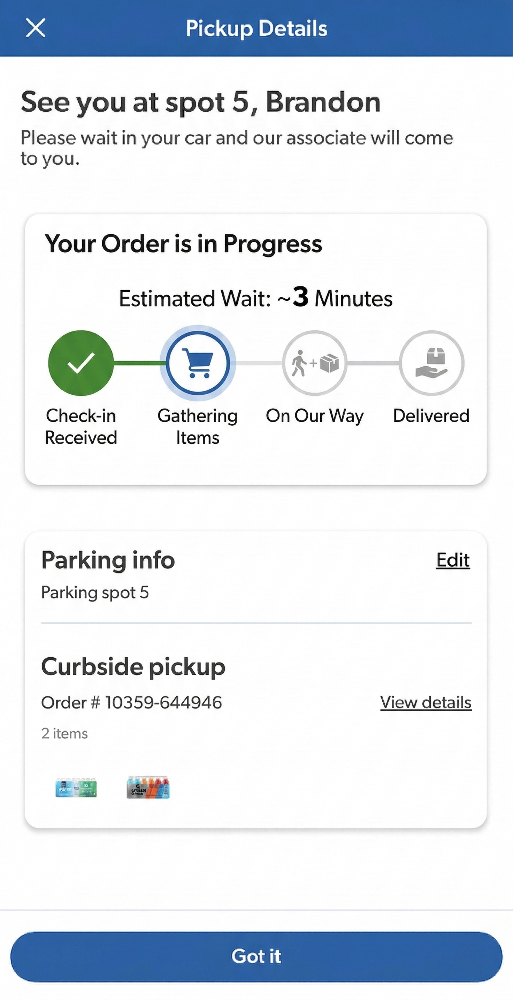
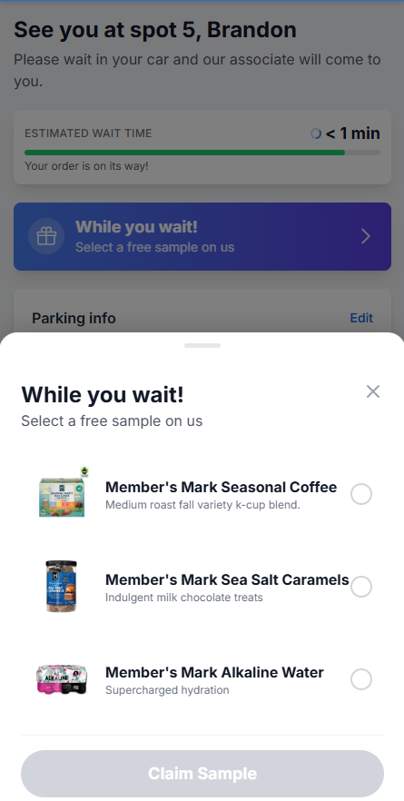
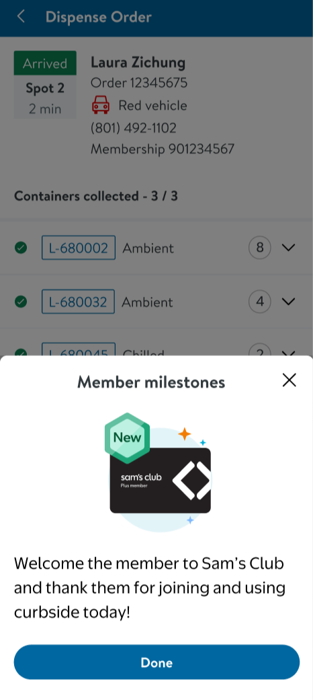
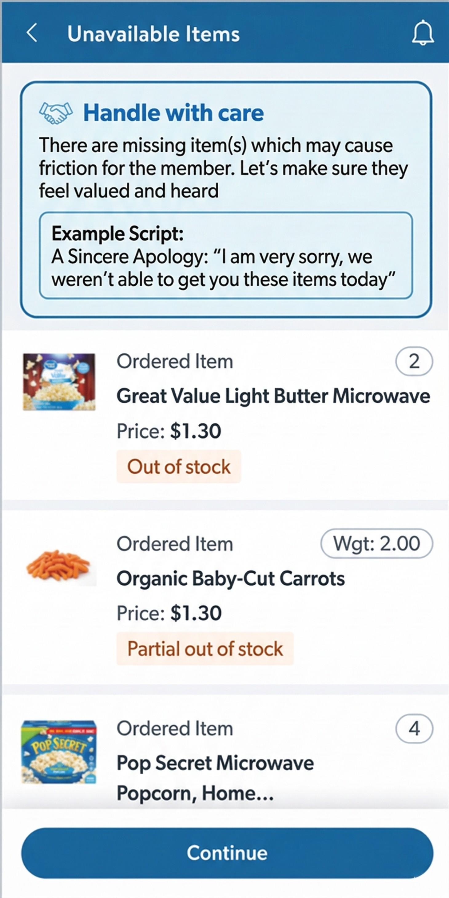
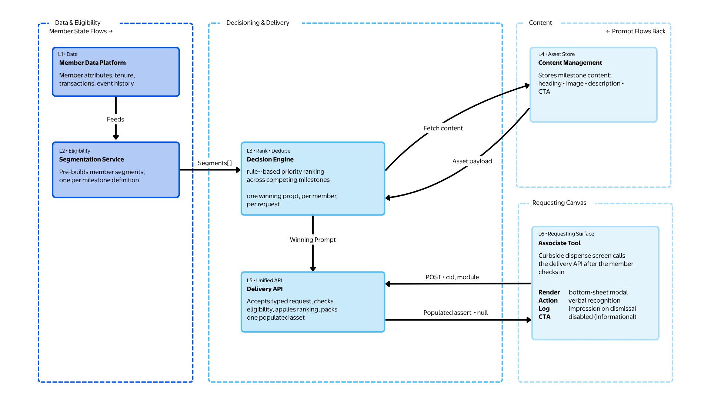

Transforming curbside from a transactional pickup into a personalized, relational experience for members and associates
Curbside at Sam's Club was optimized for fulfillment speed, not member relationships; no personalization, no proactive recovery, and associates with no member context.
Beyond in-club shopping, curbside is the most frequent physical touchpoint with members. Making it one of the points most likely to break the premium membership promise when it feels like a chore.
Product strategy, pilot design, experiment framework, cross-functional alignment across various Product, Engineering, UX, Data Science, and Club Operations teams.
~10 clubs across diverse markets. Member-facing personalized messages, an associate HUD with real-time member context, and rule-based recovery flows for unavailable items.
+10 NPS pts in the curbside flow, −5 min perceived wait time, −15% contact rate for order issues, 90%+ associate adoption of the HUD tool.
Shift from rule-based logic to ML-powered Next Best Actions, expand to national rollout, and integrate curbside signals across CRM and in-app channels.
Optimized for fulfillment speed, not for the member relationship
"Curbside was optimized for fulfillment, not for relationship. Personalization was our path to fix that."
How do we use personalization across member messaging, associate tools, and recovery to make curbside feel like a premium, relational service rather than a pickup chore?
What the member sees, reads, and feels during their pickup — from the welcome message to proactive recovery to benefit & service nudges. Every touchpoint tuned to who they are.
The associate is the delivery mechanism for personalization. Without the right context in the right moment, no amount of backend intelligence reaches the member. The HUD makes personalization humanly deliverable.
The system that decides the right message, the right recovery action, and the right moment to act. Rule-based today. ML-powered tomorrow. The brain behind both surfaces.
These three pillars work as a system, not in isolation. Member experience quality is a direct function of associate empowerment, which is a direct function of the intelligence layer underneath.
Making members feel known, valued, and heard. Never processed


Personalized messages surface meaningful milestones at exactly the right moment, when the member arrives, while they wait.
"Welcome back, Sarah! Thanks for being a Plus member for 3 years! An associate will be out with your order shortly."
When items are unavailable, members are notified at pickup, not discovering afterwards, with a clear, empathetic message and a concrete alternative to approve.
"We found a great substitute for your item, tap to approve and we'll have it ready with your order."
Purchase history surfaces relevant membership benefits & services members may not know they have. Bought pet food regularly? Surface Pet health insurance from Sam's Club Pharmacy. Right moment, right relevance.
The associate is the fulcrum; personalization only reaches members if associates are empowered to deliver it
Before the associate greets the member, they see a brief summary: who the member is, what to be aware of, and what to do. Lightweight enough to read in seconds, specific enough to make the interaction feel personal.
• Plus member, 5 years — frequent curbside user
• 1 item substituted — member notified and approved
• Suggested: thank them for their loyalty
When items are missing or substituted, associates receive clear suggested actions, not a script, but a direction. The HUD surfaces the best recovery path for this member based on their history and preferences.
The HUD offers recommendations, not requirements. Associates exercise their own judgment, the tool elevates their instincts, it doesn't replace them. This framing drove 90%+ adoption in pilot clubs.


The system that chooses the right message, the right moment, and the right recovery for the right member

The pilot runs on deterministic business rules: if a member has been a Plus member for 3+ years and has no prior complaints, surface a recognition message. If an item is substituted, trigger proactive recovery flow. Simple, auditable, and fast to ship.
Rules give us a foundation and prove the concept. ML gives us scale and precision, predicting which message, which recovery action, or which benefit nudge is most likely to drive NPS lift for this specific member, at this specific moment.
Starting with rules wasn't a compromise, it was the right call. Rules ship fast, build stakeholder confidence, and generate the labeled data ML needs to train on later.
Pilot across ~10 clubs; early signal, not final verdict
Personalized welcome and milestone messages, proactive recovery notifications for substituted items, and targeted benefit nudges based on purchase history.
Real-time HUD surfacing membership tenure, Plus status, prior issues, and a suggested action visible before member interaction, updated dynamically.
Rule-based triggers for recognition messages, substitution recovery flows, and category-based benefit recommendations. Instrumented for A/B + observational reads.
Members cited feeling "known and valued" as the primary driver of NPS lift. Personalized recovery messages received significantly higher approval rates than generic alternatives.
HUD described as "helpful, not overwhelming" across pilot clubs. Associates reported feeling more confident handling recovery situations and less time spent on manual member lookups.
One learning per pillar, the things I'd carry into the next personalization system I build
One well-timed, relevant message outperforms multiple generic ones. Members respond to being understood, not to being targeted. Personalization is a quality problem, not a quantity problem.
The quality of what members experience is directly determined by what associates see and trust. If the HUD is confusing or feels burdensome, personalization doesn't reach the member no matter how good the backend logic is.
Rule-based logic shipped fast, proved the concept to stakeholders, and generated the labeled data ML needs. Jumping straight to ML would have taken twice as long and delivered nothing to validate against.
Building on pilot proof to turn curbside into a strategic loyalty driver at scale
The goal was never to improve curbside pickup. It was to prove that a transactional channel could become a relational one, and that personalization is the mechanism for that shift. Curbside was the proving ground. The playbook scales.
I'd love to discuss this project in detail or explore how we can work together on your next product challenge.